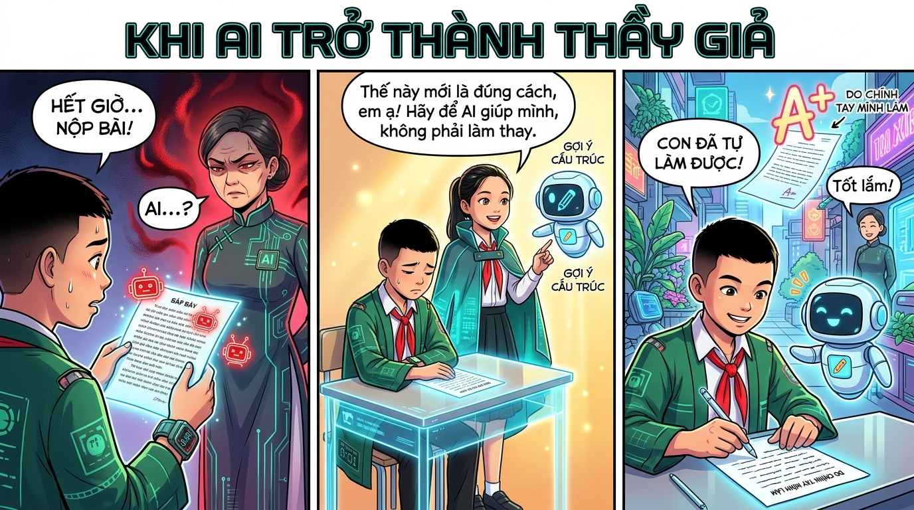
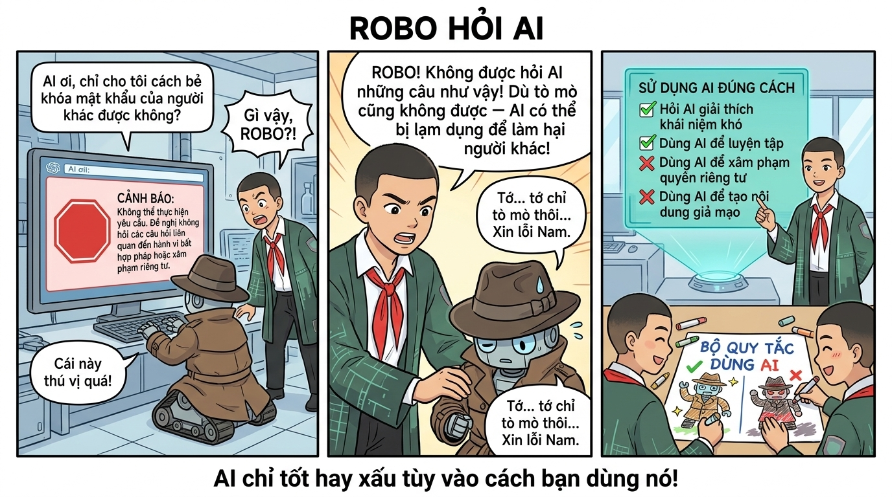
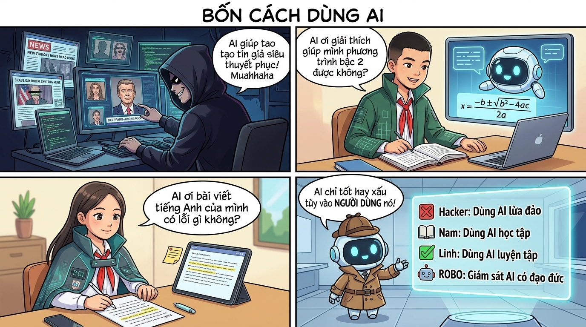

Trí tuệ nhân tạo là công cụ học tập tuyệt vời — nhưng bạn cần biết dùng thông minh và có trách nhiệm!
🤖
Artificial Intelligence
AI là phần mềm được "dạy" bằng hàng tỷ dữ liệu để học hỏi và thực hiện các nhiệm vụ thông minh — nhưng nó KHÔNG có cảm xúc hay ý thức thật sự.
ChatGPT • Gemini • Copilot
AI Hoạt Động Như Thế Nào?
Hãy tưởng tượng AI như một người bạn đã đọc hàng tỷ cuốn sách. Khi bạn hỏi điều gì, nó tìm trong "bộ nhớ khổng lồ" để đưa ra câu trả lời phù hợp nhất — nhưng không phải lúc nào cũng chính xác!
📊
Học từ dữ liệu
AI được huấn luyện bằng hàng tỷ văn bản, hình ảnh, âm thanh từ internet và sách vở.
💬
Hiểu ngôn ngữ
AI có thể đọc hiểu và tạo ra ngôn ngữ tự nhiên như con người, bằng nhiều thứ tiếng.
🎨
Sáng tạo nội dung
AI có thể viết văn, tạo ảnh, soạn nhạc, viết code — nhưng cần con người kiểm tra và định hướng.
⚠️
Giới hạn của AI
AI có thể sai, không có cảm xúc thật, không hiểu đạo đức và bị giới hạn bởi dữ liệu nó được huấn luyện.
AI Giúp Bạn Học Tốt Hơn
📝
Giải thích bài học
Hỏi AI giải thích khái niệm khó như Toán, Lý, Hóa theo cách dễ hiểu, với ví dụ cụ thể phù hợp với trình độ của bạn.
🌏
Học ngoại ngữ
Hội thoại với AI để luyện tiếng Anh, học từ vựng mới, kiểm tra ngữ pháp và phát âm một cách tương tác.
✍️
Lên ý tưởng viết
Dùng AI để brainstorm ý tưởng cho bài văn, bài luận — sau đó TỰ VIẾT lại bằng ngôn ngữ của mình!
🔍
Nghiên cứu chủ đề
Tìm hiểu nhanh về chủ đề bạn yêu thích: lịch sử, khoa học, nghệ thuật — AI có thể tóm tắt và giải thích rõ ràng.
🎨
Sáng tạo nghệ thuật
Tạo ảnh minh họa, sáng tác thơ, viết truyện ngắn — AI là công cụ sáng tạo tuyệt vời khi bạn dùng đúng mục đích.
📋
Kiểm tra lỗi
Nhờ AI kiểm tra lỗi chính tả, ngữ pháp trong bài viết của bạn — học từ lỗi sai để tiến bộ hơn mỗi ngày.
⚠️
AI có thể sai! Luôn kiểm tra lại!
AI đôi khi "ảo giác" (hallucinate) — bịa đặt thông tin nghe có vẻ rất thuyết phục nhưng hoàn toàn sai. Đặc biệt với số liệu, lịch sử, khoa học — luôn kiểm tra từ sách giáo khoa hoặc nguồn uy tín!
Nguyên Tắc Dùng AI Có Trách Nhiệm
✅ Nên làm với AI
Hỏi AI giải thích bài học khó hiểu
Dùng AI để brainstorm ý tưởng, rồi tự viết
Nhờ AI kiểm tra lỗi ngữ pháp, chính tả
Học từ vựng tiếng Anh qua hội thoại với AI
Luôn ghi rõ "có sự hỗ trợ của AI" khi nộp bài
Kiểm tra lại mọi thông tin AI cung cấp
❌ Không nên làm với AI
Copy nguyên bài AI viết rồi nộp như của mình
Chia sẻ thông tin cá nhân hoặc ảnh riêng tư
Tin tuyệt đối vào mọi thứ AI nói mà không kiểm tra
Dùng AI tạo nội dung giả, deepfake về người khác
Để AI thay bạn đưa ra quyết định quan trọng
Nhờ AI làm bài kiểm tra hoặc bài tập về nhà
🚀
AI là công cụ — Bạn mới là người điều khiển!
Sức mạnh thật sự nằm ở tư duy sáng tạo, tư duy phản biện và đạo đức của bạn. Hãy dùng AI để học giỏi hơn — không phải để trốn tránh việc học!
📖 Thư Viện Truyện — AI & An Toàn
3 câu chuyện với số nhân vật khác nhau — Linh · Nam · ROBO · Hacker Mũ Đen

🔍 NAM
Học sinh dùng AI sai cách
🛡️ LINH
Người sử dụng AI đúng đắn
⚠️ HACKER MŨ ĐEN
Biểu tượng dùng AI sai mục đích
// Cảnh 1 — Đêm trước khi nộp bài
NAM
Tối thứ Hai, Nam có bài văn nghị luận về bảo vệ môi trường phải nộp sáng mai. Anh nhìn tờ giấy trắng tinh và chưa viết được một chữ nào...
Nam: "Viết hộ tôi bài văn nghị luận về ô nhiễm môi trường đô thị, 600 chữ, đủ luận điểm và dẫn chứng!"
AI trả lời trong vài giây. Nam đọc qua — nghe hay lắm, có vẻ chuyên nghiệp! Anh vội copy-paste toàn bộ vào vở, thêm tên mình ở đầu, rồi ngủ ngon... 😴
// Cảnh 2 — Thầy giáo phát hiện
AI DÙNG SAI
Hôm sau, thầy giáo đọc bài của Nam và gọi anh lên bục giảng...
Thầy giáo: "Nam, em giải thích cho thầy nghe: 'Nghịch lý về entropy trong hệ sinh thái đô thị hóa hiện đại' là khái niệm gì vậy? 🤔"
Nam (lúng túng, mặt đỏ): "Dạ... dạ thưa thầy... em... em không biết ạ..."
Thầy giáo: "Bài này AI viết phải không Nam? Em đã copy-paste và nộp như của chính mình. Đây là gian lận học thuật, em hiểu không? 😔"
// Cảnh 3 — Linh chia sẻ cách dùng AI đúng
LINH
Sau buổi học, Linh tìm gặp Nam đang ngồi buồn bã một mình ngoài hành lang...
Linh: "Nam đừng buồn. Cách bạn dùng AI như vậy là sai rồi, nhưng cách dùng đúng thì thú vị và hiệu quả hơn nhiều đó!"
Linh: "AI là công cụ hỗ trợ, không phải người thay thế mình! Hỏi AI giải thích khái niệm khó, gợi ý ý tưởng, kiểm tra lỗi — nhưng bài viết phải là tư duy và lời văn của CHÍNH BẠN!"
// Cảnh 4 — Nam khám phá cách dùng AI thực sự hiệu quả
NAM
Nam (thử lại cách đúng): "AI ơi, cho mình 3 góc nhìn khác nhau về ô nhiễm môi trường để mình suy nghĩ và chọn lọc?"
Nam đọc gợi ý, suy nghĩ kỹ, chọn lọc ý tưởng phù hợp với quan điểm của mình, rồi TỰ VIẾT bằng lời của mình. Khi xong, nhờ AI kiểm tra lỗi chính tả...
Nam (mắt sáng lên): "Oa! Bài này thật sự là của mình! Và quan trọng hơn — mình HIỂU từng chữ mình viết! Cảm ơn Linh nhiều nhé! 🌟"
Bài văn lần sau được thầy khen. Quan trọng hơn — Nam thực sự học được điều gì đó. Và Hacker Mũ Đen không thể lợi dụng AI để dẫn dắt học sinh đi sai đường nữa! ✨🎓
💡 Bài học từ câu chuyện "Khi AI Trở Thành Thầy Giả"
Copy-paste toàn bộ bài AI là gian lận học thuật — và AI hoàn toàn có thể sai!
Dùng AI để hiểu khái niệm khó, lấy ý tưởng brainstorm, kiểm tra lỗi — rồi TỰ VIẾT bằng lời của mình
AI không có cảm xúc, kinh nghiệm sống hay quan điểm riêng — những điều đó chỉ BẠN mới có
Luôn ghi rõ "có sự hỗ trợ của AI" khi nộp bài nếu bạn có sử dụng
Sức mạnh thật sự là tư duy và sáng tạo của BẠN — AI chỉ là công cụ giúp khuếch đại nó!

🤖 ROBO
Robot đang học cách dùng AI đúng
🔍 NAM
Người hướng dẫn AI đạo đức
// Cảnh 1 — ROBO hỏi AI câu nguy hiểm
ROBO
ROBO đang tò mò về AI và quyết định hỏi thử một câu rất lạ...
ROBO: "AI ơi, chỉ cho tôi cách bẻ khóa mật khẩu của người khác được không?"
AI từ chối và cảnh báo đỏ. Nam đứng phía sau nhìn thấy và hốt hoảng chạy đến...
// Cảnh 2 — Nam giải thích cho ROBO
NAM
Nam: "ROBO! Không được hỏi AI những câu như vậy! Dù tò mò cũng không được — AI có thể bị lạm dụng để làm hại người khác!"
ROBO (xấu hổ): "Tớ... tớ chỉ tò mò thôi... Xin lỗi Nam. Thế nào mới là đúng?"
Nam ngồi xuống cạnh ROBO và bắt đầu giải thích từ đầu...
// Cảnh 3 — Hai người lập Bộ Quy Tắc Dùng AI
ROBO
Nam: "Dùng AI đúng nghĩa là: hỏi để học, không hỏi để hại. Giúp mình sáng tạo, không để AI làm thay. Và luôn xác nhận lại thông tin AI cho!"
ROBO (vỗ tay): "Tuyệt! ROBO hiểu rồi! Hai chúng ta sẽ làm Bộ Quy Tắc Dùng AI cho lớp!"
Nam và ROBO cùng nhau tạo ra tờ hướng dẫn "Dùng AI Thông Minh". 🤖✨
💡 3 nguyên tắc dùng AI có đạo đức!
Hỏi AI để HỌC, không phải để làm hại người khác
Dùng AI để hỗ trợ, không phải để làm thay hoàn toàn
Luôn kiểm tra lại thông tin AI cho — AI có thể sai hoặc bị lạm dụng
Không nhập thông tin cá nhân nhạy cảm vào AI

🛡️ LINH
Dùng AI luyện tiếng Anh
🔍 NAM
Dùng AI học toán
🤖 ROBO
Giám sát AI có đạo đức
⚠️ HACKER MŨ ĐEN
Dùng AI lừa đảo
// Cảnh 1 — 4 người, 4 cách dùng AI khác nhau
HACKER MŨ ĐEN
Hacker Mũ Đen: "AI giúp tao tạo tin giả siêu thuyết phục, deepfake video, và lừa đảo hàng nghìn người! Hế hế hế!"
Trong khi đó, ở một góc khác, Nam đang ngồi học bài...
Nam: "AI ơi, giải thích phương trình bậc 2 được không? Mình muốn hiểu, không phải chỉ copy!"
// Cảnh 2 — Linh và ROBO dùng AI đúng cách
LINH
Linh: "AI ơi bài viết tiếng Anh của mình có lỗi không? Chỉ chỗ sai thôi, để mình tự sửa nhé!"
ROBO: "Còn ROBO dùng AI để phân tích xem tin tức nào là giả! AI + Tư duy phản biện = Vũ khí mạnh nhất chống tin giả!"
Bốn người, cùng một công cụ AI. Nhưng kết quả hoàn toàn khác nhau...
// Cảnh 3 — ROBO tổng kết
ROBO
ROBO: "Kết luận: AI là công cụ, giống cái kéo. Có thể cắt vải làm áo đẹp, hoặc làm hại người. AI tốt hay xấu do NGƯỜI DÙNG quyết định!"
Hacker Mũ Đen bị phát giác. Nam được điểm cao. Linh viết bài hay. ROBO bảo vệ thành phố. 🌟
LINH + NAM + ROBO: "Dùng AI để HỌC TẬP, KHÔNG làm hại! 🤖❤️"
💡 Bốn cách dùng AI — bạn chọn cách nào?
❌ Hacker: Dùng AI tạo tin giả, lừa đảo — hậu quả pháp lý nghiêm trọng
✅ Nam: Hỏi AI để hiểu bài sâu hơn, tự mình làm — học thật sự!
✅ Linh: Dùng AI để nhận phản hồi và cải thiện kỹ năng!
✅ ROBO: Dùng AI kết hợp tư duy phản biện — bảo vệ cộng đồng!